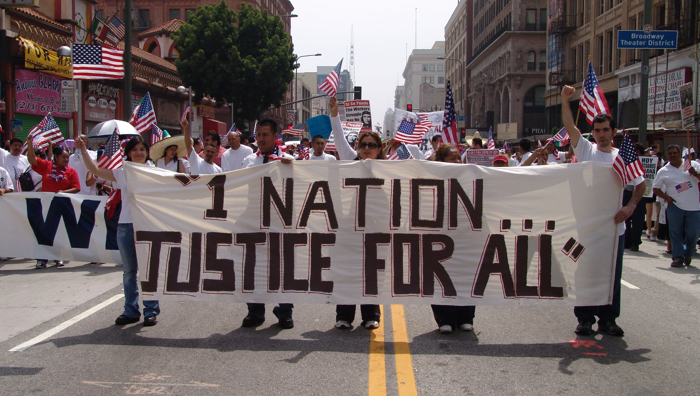

#ImmigrationSyllabus
Essential readings and digital resources that provide historical context to current debates over immigration and citizenship
Revised and Updated - June 2026
Created by immigration historians affiliated with the Immigration History Research Center and the Immigration and Ethnic History Society.
The 2016 presidential election brought a great deal of attention to immigration and immigrants in American society. Much of that debate perpetuated harmful stereotypes, dangerously stoked fears about outsiders, and echoed a nativist rhetoric that many believed had become irrelevant to public discourse. The debate also ignored how current discussions are deeply rooted in centuries-long conversations about who is allowed into the country and what it means to be an American.
In response to that election, a team of immigration historians from the Immigration History Research Center at the University of Minnesota and the Immigration and Ethnic History Society created the first #ImmigrationSyllabus. Its goal was to provide historical context to current debates over immigration reform, integration, and citizenship. The original #ImmigrationSyllabus provided an important resource for teachers, students, scholars, journalists, organizers, and communities seeking to understand the centrality of immigrants and immigration to our nation’s past.
In 2025, as the United States was embroiled in a surge of increased xenophobia and immigration enforcement, the Immigration History Research Center embarked on an update to this important resource guide. We convened a new team of scholars, consulted with the original authors of the syllabus, and created this revised and updated #ImmigrationSyllabus. This update is by no means intended to replace the original; we encourage you to view the original #ImmigrationSyllabus here. Our goal was to incorporate new scholarship and resources that have emerged since the original’s publication and to highlight works in United States migration history that speak to the exigencies of the current moment.
The revised and updated #ImmigrationSyllabus follows a loosely chronological overview of US immigration history, but with thematic emphases on issues like deportation and detention that transcend time periods. As there are many ways of learning immigration history, the topics included here are not intended to be exhaustive. Rather, we have selected readings that directly offer historical context for understanding contemporary immigration politics and have proven useful in our teaching. Each week of the syllabus provides a selection of relevant scholarship, as well as a list of resources that may be useful in a classroom or workshop setting. We prioritized recent scholarship to give a sense of how the field of immigration history is developing, but please see the original #ImmigrationSyllabus for additional important works.
As with the original, we hope that this updated resource guide will help educators and activists in their teaching, advocacy, and public discussions about immigration in the United States historically and today. We also hope that it will assist policymakers who seek to avoid the mistakes of the past. We encourage you to reach out to the Immigration History Research Center at IHRC@umn.edu with any questions.